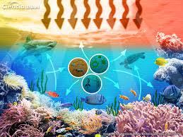

La ecología marina es el estudio de las interacciones entre los organismos que habitan en los océanos y sus entornos, así como de los procesos que regulan estas relaciones. Este campo abarca desde los microorganismos que flotan en la superficie del mar hasta los grandes mamíferos marinos y los ecosistemas complejos como los arrecifes de coral. Comprender la ecología marina es fundamental para evaluar la salud de nuestros océanos, que son vitales para la vida en la Tierra y desempeñan un papel crucial en la regulación del clima global.
La importancia de la ecología marina radica en su influencia directa sobre la biodiversidad, la seguridad alimentaria y los medios de vida de millones de personas. Los océanos no solo son una fuente de recursos, como pescado y algas, sino que también actúan como un gran regulador del carbono, absorbiendo una parte significativa de las emisiones de gases de efecto invernadero. Proteger y conservar los ecosistemas marinos es esencial para garantizar un futuro sostenible para nuestro planeta, asegurando que las próximas generaciones puedan disfrutar de sus beneficios y recursos.
Los ecosistemas acuáticos, que incluyen océanos, ríos, lagos y humedales, son para la salud del planeta. Estos ecosistemas no solo proporcionan hábitats para una rica biodiversidad, sino que también cumplen funciones esenciales que benefician tanto al medioambiente como a los seres humanos. La preservación de estos ecosistemas es vital para asegurar un equilibrio ecológico que sustente la vida en la Tierra.
Una de las principales razones por las que los ecosistemas acuáticos son importantes es su capacidad para regular el clima. A través de procesos como la absorción de dióxido de carbono, los océanos actúan como un sumidero de carbono, ayudando a mitigar el cambio climático. Además, proporcionan oxígeno, lo que es crucial para la supervivencia de muchas especies, incluyendo la nuestra.

Ir al inicio del articulo
Los ecosistemas acuáticos también son esenciales para la seguridad alimentaria y la economía global. Proporcionan recursos pesqueros y acuáticos que alimentan a millones de personas en todo el mundo. Asimismo, apoyan actividades económicas como el turismo y la recreación. Algunos de los beneficios clave incluyen:
- Producción de alimentos: Pesca y acuicultura sustentables.
- Recursos naturales: Medicamentos y productos derivados del mar.
- Regulación del ciclo del agua: Mantenimiento de la calidad del agua y control de inundaciones.
- Hábitats para la biodiversidad: Refugios para numerosas especies animales y vegetales.
La conservación de los ecosistemas acuáticos es un deber colectivo. La pérdida de estos hábitats puede tener consecuencias devastadoras, como la disminución de la biodiversidad y el colapso de las pesquerías. Por lo tanto, es esencial implementar estrategias de gestión sostenible que protejan estos ecosistemas y aseguren su salud para las generaciones futuras.
Ecología marina: ejemplos y su relevancia
Ir al inicio del articulo
La ecología marina es la rama de la ecología que se enfoca en el estudio de los ecosistemas marinos, abarcando desde las aguas superficiales hasta los fondos oceánicos. Este campo de estudio no solo analiza la vida marina, sino también las interacciones entre los organismos y su entorno, incluyendo factores físicos y químicos. Entre los ejemplos más notables de ecosistemas marinos se encuentran los corales, las praderas de pastos marinos y los humedales costeros.
La relevancia de la ecología marina radica en su impacto directo sobre la salud del planeta. Los océanos cubren aproximadamente el 71 % de la superficie terrestre y son responsables de la producción de más del 50 % del oxígeno que respiramos. Además, los ecosistemas marinos son cruciales para la regulación del clima, ya que absorben grandes cantidades de dióxido de carbono, contribuyendo a mitigar el cambio climático.
Otro aspecto importante es la biodiversidad marina, que ofrece una variedad de recursos esenciales para la humanidad. Entre ellos se encuentran:
- Fuentes de alimento, como peces y mariscos.
- Medicamentos derivados de organismos marinos.
- Oportunidades para el turismo y la recreación.
- Servicios ecosistémicos, como la protección de costas y la purificación del agua.
La importancia de la biodiversidad marina para los ecosistemas terrestres
La biodiversidad marina desempeña un papel crucial en la salud de los ecosistemas terrestres. A menudo, se subestima la interconexión entre los océanos y las tierras emergidas, pero la verdad es que ambos sistemas están intrínsecamente ligados. Los océanos regulan el clima global y, a su vez, la biodiversidad marina ayuda a mitigar el cambio climático al capturar y almacenar dióxido de carbono. Este proceso no solo beneficia a las especies marinas, sino que también tiene un impacto directo en las comunidades terrestres y sus recursos naturales.
Además, la biodiversidad en los océanos contribuye a la producción de oxígeno, lo que es vital para la vida en la Tierra. Organismos como el fitoplancton, que habita en las aguas superficiales, son responsables de producir aproximadamente el 50 % del oxígeno que respiramos. La pérdida de estas especies marinas podría tener efectos devastadores no solo en la calidad del aire, sino también en la salud de los ecosistemas terrestres que dependen de un ambiente equilibrado.
Otro aspecto importante es que los ecosistemas marinos actúan como un sistema de soporte para la biodiversidad terrestre. Muchas especies terrestres, como aves y mamíferos, dependen de los recursos que se encuentran en los océanos, ya sea para alimentarse, reproducirse o migrar. Por ejemplo:
- Las aves marinas se alimentan de peces y otros organismos acuáticos.
- Las ballenas y otros cetáceos contribuyen al ciclo de nutrientes en el océano, lo que a su vez beneficia la producción de alimento en las costas.